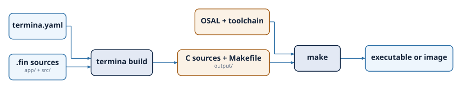

Project Structure and Build System¶
A Termina program is organized as a project: a directory with a fixed layout, a configuration file, and the source modules that make up the application. This chapter describes that layout, the configuration file that governs it, and the commands that turn the source into a running program.
Creating a project¶
A project is created with the new command, which takes the project name and,
optionally, the target platform. When no platform is given, the project is
created for posix-gcc, the development platform:
The command generates the project directory with its initial structure:
The project layout¶
The four elements of a new project have distinct roles. The file termina.yaml
holds the project configuration. The app directory contains the application
module, app.fin, where the system is assembled. The src directory holds the
source modules that define the component classes and functions of the program.
The output directory receives the C code that the transpiler generates, and is
empty until the project is built.
The modules under src are organized in subdirectories, and the directory
structure mirrors the dotted paths used in import declarations. A module at
src/resources/counter.fin is imported as resources.counter, and one at
src/common/types.fin as common.types. A module always belongs to a
subdirectory; the root of src holds directories, not modules.
The configuration file¶
The termina.yaml file records the settings the transpiler needs. A freshly
created project contains the following:
app-file: app
app-folder: app
builder: make
efp-folder: efp
name: hello_world
output-folder: output
platform: posix-gcc
source-modules: src
The name is the name of the project, and platform is the target it is built
for. The remaining entries name the parts of the layout: the folder of the
application module and the file within it, the folder of the source modules, the
folder for the generated output, the folder reserved for analysis support files,
and the build tool used to compile that output.
Some features of the runtime are switched on here as well. Setting
enable-system-port to true deploys the system_entry resource that provides
the system interface, and the platform-flags section enables platform-specific
sources, such as the keyboard interrupt of the posix-gcc platform:
Building a project¶
Building a project is a two-stage process: the transpiler turns the Termina sources into C, and the platform's build system turns that C into a program.

The first stage is transpilation,
carried out by the build command from the project's root directory:
The transpiler reads the application module and the source modules, checks the
program, and writes the resulting C into the output directory. The output
mirrors the source: a src tree of C files, an include tree of headers, and a
Makefile that knows how to compile them against the Operating System
Abstraction Layer for the configured platform.
The second stage compiles that generated code. On the posix-gcc platform, this
is done with make from inside the output directory, and it produces an
executable in bin that can be run directly:
For an embedded target, the same two stages apply, but the compilation uses the cross-toolchain of the chosen platform, and the result is an image to be loaded onto the device or an emulator rather than an executable for the host.
Platforms¶
Termina currently supports three platforms. The posix-gcc platform builds the
application for a conventional Unix-like host, using the system's own compiler,
and is intended for development and validation. The rtems5-leon3-nexysa7
platform targets the LEON3 processor under RTEMS 5, and the
freertos10-stm32l432xx platform targets the STM32L432 microcontroller under
FreeRTOS 10. The platform is chosen when the project is created, with the
--platform option of the new command, or changed afterwards by editing the
platform field in termina.yaml. Each target beyond posix-gcc requires its
cross-toolchain to be installed, as described in the chapter on installation.